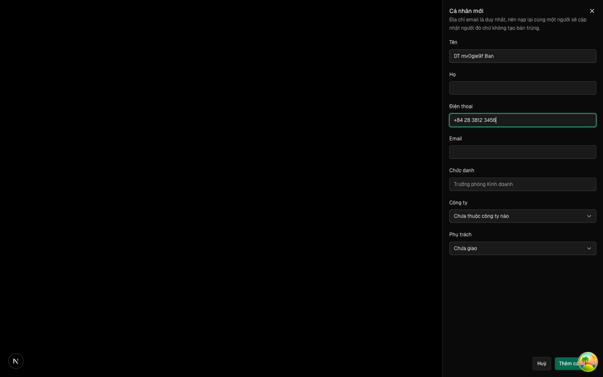
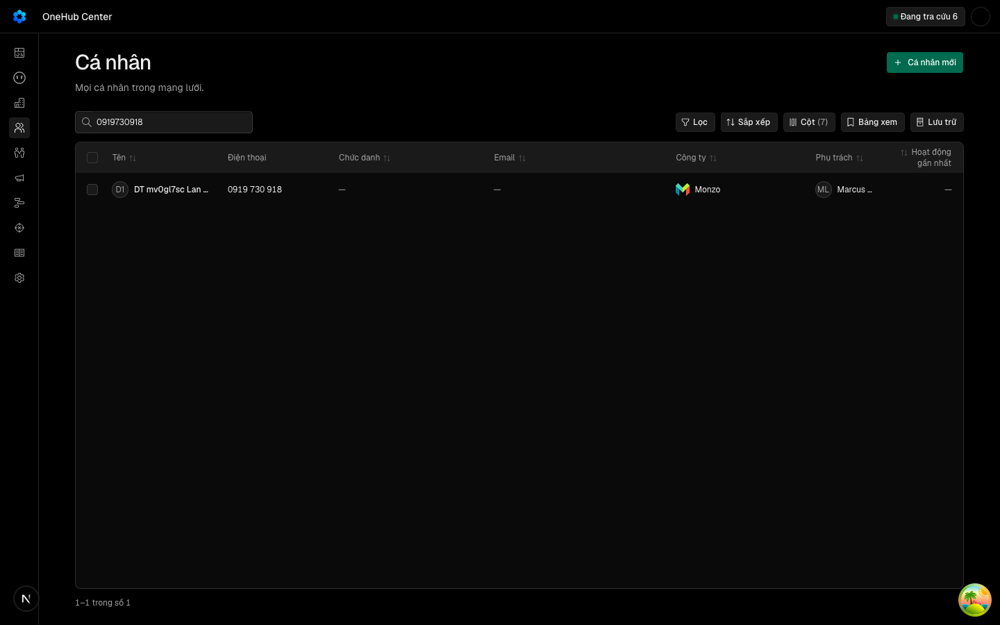
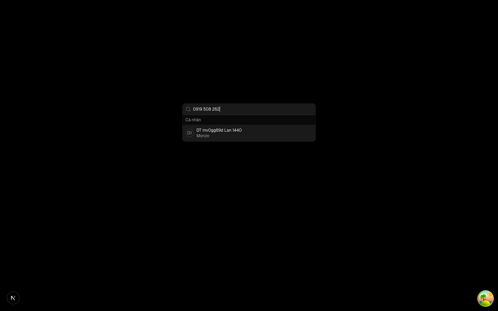
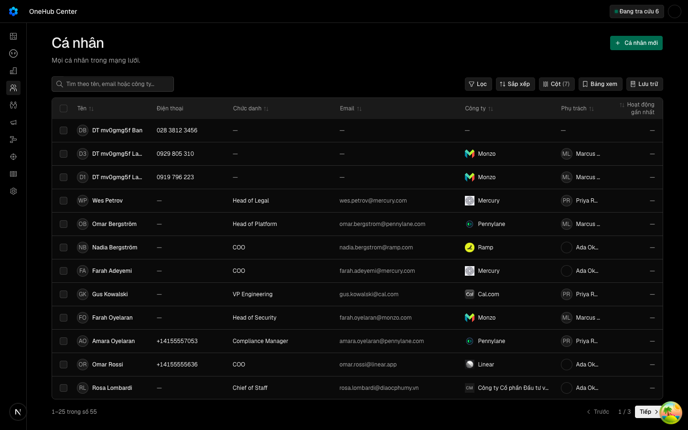

«Số điện thoại là trường chính của cá nhân: nhập được lúc tạo, thấy ở bảng, tìm được theo số, không trùng»
Các eval
| Eval | Tiêu chí | Loại | Verdict | run_id | verified_at |
|---|---|---|---|---|---|
| E1 | AC-1 | ui-check | PASS | minted-dien-thoai-ca-nhan-E1-r3 | 2026-10-09T04:15:19Z |
| E2 | AC-1 | test | PASS | minted-dien-thoai-ca-nhan-E2-r3 | 2026-10-09T04:15:19Z |
| E2b | AC-2 | test | PASS | minted-dien-thoai-ca-nhan-E2b-r3 | 2026-10-09T04:15:19Z |
| E3 | AC-2 | test | PASS | minted-dien-thoai-ca-nhan-E3-r3 | 2026-10-09T04:15:19Z |
| E4 | AC-3 | test | PASS | minted-dien-thoai-ca-nhan-E4-r3 | 2026-10-09T04:15:19Z |
| E5 | AC-4 | test | PASS | minted-dien-thoai-ca-nhan-E5-r3 | 2026-10-09T04:15:19Z |
| E6 | AC-4 | test | PASS | minted-dien-thoai-ca-nhan-E6-r3 | 2026-10-09T04:15:19Z |
| E7 | AC-5 | test | PASS | minted-dien-thoai-ca-nhan-E7-r3 | 2026-10-09T04:15:19Z |
| E8 | AC-6 | test | PASS | minted-dien-thoai-ca-nhan-E8-r3 | 2026-10-09T04:15:19Z |
| E9 | AC-7 | test | PASS | minted-dien-thoai-ca-nhan-E9-r3 | 2026-10-09T04:15:19Z |
| E10 | AC-8 | test | PASS | "" | 2026-10-09T04:15:19Z |
| E11 | AC-9 | test | PASS | minted-dien-thoai-ca-nhan-E11-r3 | 2026-10-09T04:15:19Z |
| E12 | AC-10 | test | PASS | minted-dien-thoai-ca-nhan-E12-r3 | 2026-10-09T04:15:19Z |
| E13 | AC-11 | test | PASS | mv0gcxu2l64y | 2026-10-09T04:15:19Z |
| E14 | AC-12 | test | PASS | "" | 2026-10-09T04:15:19Z |
| E15 | AC-13 | script | PASS | design-gate-91b55c7e49, design-gate-c7196074b1 | 2026-10-09T04:15:19Z |
| E16 | AC-2 | ui-check | PASS | minted-dien-thoai-ca-nhan-E16-r3 | 2026-10-09T04:15:19Z |
| E17 | AC-9 | ui-check | PASS | minted-dien-thoai-ca-nhan-E17-r3 | 2026-10-09T04:15:19Z |
| E18 | AC-10 | ui-check | PASS | minted-dien-thoai-ca-nhan-E18-r3 | 2026-10-09T04:15:19Z |
| E19 | AC-4 | ui-check | PASS | mot-luot dt_do_man (E19 / AC-4) | 2026-10-09T04:15:19Z |
| E20 | AC-8 | ui-check | PASS | minted-dien-thoai-ca-nhan-E20-r3 | 2026-10-09T04:15:19Z |
| E21 | AC-6 | test | PASS | minted-dien-thoai-ca-nhan-E21-r3 | 2026-10-09T04:15:19Z |
Chi tiết từng eval
PASS E1 · ui-check
AC-1: (cross-layer) Given tab Cá nhân của một công ty trên app thật, When bấm «Thêm cá nhân», gõ Tên «Lan» và Điện thoại «0901 234 567» rồi bấm «Thêm cá nhân», Then form có ô «Điện thoại» nằm ngay sau Tên/Họ và trước Email, và cá nhân «Lan» được lưu thuộc công ty đó với số `+84901234567` và nguồn `MANUAL`.
PASS E2 · test
AC-1: (cross-layer) Given tab Cá nhân của một công ty trên app thật, When bấm «Thêm cá nhân», gõ Tên «Lan» và Điện thoại «0901 234 567» rồi bấm «Thêm cá nhân», Then form có ô «Điện thoại» nằm ngay sau Tên/Họ và trước Email, và cá nhân «Lan» được lưu thuộc công ty đó với số `+84901234567` và nguồn `MANUAL`.
describe "tao-chuan-hoa" chay tren CSDL thu rieng cua luot test-run: dropped crm_mv0gcy70cr9u_test
PASS E2b · test
AC-2: (cross-layer) Given trang Cá nhân, When mở «Cá nhân mới», gõ Tên và Điện thoại «+84 28 3812 3456» rồi lưu, Then sheet có ô «Điện thoại» ngay sau Tên/Họ, và cá nhân được lưu với số `+842838123456` và nguồn `MANUAL`.
cung lenh voi E2 (dedupe); dong 2 cua "tao-chuan-hoa" test-run: dropped crm_mv0gcy70cr9u_test
PASS E3 · test
AC-2: (cross-layer) Given trang Cá nhân, When mở «Cá nhân mới», gõ Tên và Điện thoại «+84 28 3812 3456» rồi lưu, Then sheet có ô «Điện thoại» ngay sau Tên/Họ, và cá nhân được lưu với số `+842838123456` và nguồn `MANUAL`.
Ran 4 tests across 1 file. [1449.00ms]
PASS E4 · test
AC-3: Given hàm đọc số dùng chung, When đọc từng dạng trong ma trận viết trước (`0901 234 567`, `0901.234.567`, `(+84) 901-234-567`, `84901234567`, `+84901234567`, `028 3812 3456`, `+65 6123 4567`, `+84 0901 234 567`, `+84 (0) 901 234 567`, `840901234567`, chuỗi rỗng, chỉ khoảng trắng, `abc`, `12345`, `0901 234 56`, `+84 12`, 16 chữ số, `00901234567`), Then dạng VN ra `+84` + số quốc nội (số 0 trung kế sau `+84` bị bỏ — số quốc nội VN không bao giờ bắt đầu bằng 0), số nước ngoài giữ `+<chữ số>`, rỗng ra «rỗng», còn lại ra «sai»; và hàm hiện số đọc số trước rồi mới định dạng: `0901 234 567` cho cả `+84901234567` lẫn số thô cũ `0901.234.567`, `028 3812 3456` cho `+842838123456`, `+6561234567` cho số nước ngoài, nguyên văn cho chuỗi cũ không đọc được (`máy lẻ 123`).
Ran 32 tests across 1 file. [7.00ms]
PASS E5 · test
AC-4: Given form «Thêm cá nhân» hoặc sheet «Cá nhân mới», When gõ Điện thoại «abc» hay «12345» rồi bấm lưu, Then không gọi API tạo cá nhân, dưới ô hiện «Số điện thoại chưa đúng — ví dụ 0901 234 567» và con trỏ về ô Điện thoại; When API nhận thẳng số sai (không qua form), Then trả lỗi đầu vào (BAD_REQUEST) và không tạo, không sửa gì.
Ran 6 tests across 1 file. [1488.00ms]
PASS E6 · test
AC-4: Given form «Thêm cá nhân» hoặc sheet «Cá nhân mới», When gõ Điện thoại «abc» hay «12345» rồi bấm lưu, Then không gọi API tạo cá nhân, dưới ô hiện «Số điện thoại chưa đúng — ví dụ 0901 234 567» và con trỏ về ô Điện thoại; When API nhận thẳng số sai (không qua form), Then trả lỗi đầu vào (BAD_REQUEST) và không tạo, không sửa gì.
test-run: dropped crm_mv0gczom5amm_test
PASS E7 · test
AC-5: Given chỉ gõ Tên, không gõ số, When thêm cá nhân ở cả hai form, Then vẫn thêm được (số để trống) — điện thoại không bắt buộc.
cung lenh voi E2 (dedupe); dong 4 cua "tao-chuan-hoa" (khong phone, phone null) test-run: dropped crm_mv0gcy70cr9u_test
PASS E8 · test
AC-6: (cross-layer) Given một cá nhân chưa lưu trữ có số lưu THÔ từ trước `0901.234.567`, When tạo cá nhân mới với số `+84 901 234 567`, Then bị từ chối (CONFLICT) với câu nêu tên người đang giữ số, và không có dòng cá nhân mới nào; trên form, toast hiện câu đó và các ô Tên, Điện thoại giữ nguyên chữ đã gõ; When tạo với dạng có số 0 trung kế `+84 0901 234 567` cho cùng số đó, Then cũng bị từ chối; When người giữ số đó đã lưu trữ, Then tạo được.
describe "trung-tao" test-run: dropped crm_mv0gcywujp5j_test
PASS E9 · test
AC-7: Given hai cá nhân A (số `0901234567`) và B, When sửa số của B thành `+84901234567`, Then bị từ chối (CONFLICT) và số của B không đổi; When sửa số của A thành `+84 901 234 567` (cùng số, dạng khác), Then được và lưu `+84901234567`; When xoá trống số của A, Then lưu rỗng; Given dữ liệu cũ đã có A và C cùng chưa lưu trữ và cùng số thô `0901.234.567`, When sửa Chức danh của A (không gửi số) hoặc gửi lại chính số đó dưới dạng khác, Then sửa được — chỉ kiểm trùng khi số quốc nội thật sự đổi.
cung lenh voi E8 (dedupe); describe "trung-sua" test-run: dropped crm_mv0gcywujp5j_test
PASS E10 · test
AC-8: Given bảng Cá nhân, When có người mang số `+84901234567`, người mang `+6561234567` và người không số, Then có cột «Điện thoại» ngay sau Tên hiện lần lượt `0901 234 567`, `+6561234567` và ô trống chuẩn; ngăn chi tiết của người đầu hiện `0901 234 567` với liên kết gọi `tel:+84901234567`.
hai lenh bun test noi bang && (cot-bang, roi ngan-chi-tiet), ca hai ket thuc thanh cong
PASS E11 · test
AC-9: (cross-layer) Given cá nhân P có số chuẩn `+84901234567` và cá nhân Q có số thô cũ `0912.345.678`, When gõ vào ô tìm của bảng Cá nhân lần lượt `0901234567`, `+84 901 234 567`, `234 567`, `0912345678`, Then mỗi lần danh sách tìm được chứa đúng người mang số đó; When gõ `12` (dưới ngưỡng), Then không lọc theo số (tìm theo tên/email như cũ).
describe "tim-bang" test-run: dropped crm_mv0gcyddvsed_test
PASS E12 · test
AC-10: (cross-layer) Given cá nhân P như AC-9, When gõ `0901 234 567` vào ⌘K, Then P có trong mục Cá nhân, dòng phụ là tên công ty, hoặc số (dạng hiện) khi P không có công ty.
cung lenh voi E11 (dedupe); describe "tim-cmdk" test-run: dropped crm_mv0gcyddvsed_test
PASS E13 · test
AC-11: Given cá nhân P như AC-9, When Kara trong app tìm cá nhân bằng `0901234567`, Then danh sách tìm được có P; và danh sách đó không mang số điện thoại của ai (Kara tìm được người qua số nhưng không đọc số ra).
test-run: dropped crm_mv0gcxu2l64y_test
PASS E14 · test
AC-12: Given ô chọn môi giới ở «30 ngày đầu», When gõ số của một người nạp từ listing (số thô `0901.234.567`, không email) dưới dạng `0901234567` hay `0901 234 567`, Then người đó vẫn hiện trong gợi ý và dòng gợi ý hiện số dạng `0901 234 567`; người có email mà không số thì gợi ý vẫn là email.
Ran 5 tests across 1 file. [1331.00ms]
PASS E15 · script
AC-13: Given các tệp giao diện vòng này sửa, When chạy sàn thiết kế của kho, Then không vi phạm P0; ô Điện thoại dùng `Input` của `@crm/ui` với `type="tel"` và nhãn bấm được, câu lỗi dùng `FieldError`, không `className` đổi màu/góc.
design-gate --mode static chay lan luot cho nam tep, vong lap ket thuc thanh cong, khong P0
PASS E16 · ui-check
AC-2: (cross-layer) Given trang Cá nhân, When mở «Cá nhân mới», gõ Tên và Điện thoại «+84 28 3812 3456» rồi lưu, Then sheet có ô «Điện thoại» ngay sau Tên/Họ, và cá nhân được lưu với số `+842838123456` và nguồn `MANUAL`.


PASS E17 · ui-check
AC-9: (cross-layer) Given cá nhân P có số chuẩn `+84901234567` và cá nhân Q có số thô cũ `0912.345.678`, When gõ vào ô tìm của bảng Cá nhân lần lượt `0901234567`, `+84 901 234 567`, `234 567`, `0912345678`, Then mỗi lần danh sách tìm được chứa đúng người mang số đó; When gõ `12` (dưới ngưỡng), Then không lọc theo số (tìm theo tên/email như cũ).


PASS E18 · ui-check
AC-10: (cross-layer) Given cá nhân P như AC-9, When gõ `0901 234 567` vào ⌘K, Then P có trong mục Cá nhân, dòng phụ là tên công ty, hoặc số (dạng hiện) khi P không có công ty.


PASS E19 · ui-check
AC-4: Given form «Thêm cá nhân» hoặc sheet «Cá nhân mới», When gõ Điện thoại «abc» hay «12345» rồi bấm lưu, Then không gọi API tạo cá nhân, dưới ô hiện «Số điện thoại chưa đúng — ví dụ 0901 234 567» và con trỏ về ô Điện thoại; When API nhận thẳng số sai (không qua form), Then trả lỗi đầu vào (BAD_REQUEST) và không tạo, không sửa gì.
PASS E20 · ui-check
AC-8: Given bảng Cá nhân, When có người mang số `+84901234567`, người mang `+6561234567` và người không số, Then có cột «Điện thoại» ngay sau Tên hiện lần lượt `0901 234 567`, `+6561234567` và ô trống chuẩn; ngăn chi tiết của người đầu hiện `0901 234 567` với liên kết gọi `tel:+84901234567`.


PASS E21 · test
AC-6: (cross-layer) Given một cá nhân chưa lưu trữ có số lưu THÔ từ trước `0901.234.567`, When tạo cá nhân mới với số `+84 901 234 567`, Then bị từ chối (CONFLICT) với câu nêu tên người đang giữ số, và không có dòng cá nhân mới nào; trên form, toast hiện câu đó và các ô Tên, Điện thoại giữ nguyên chữ đã gõ; When tạo với dạng có số 0 trung kế `+84 0901 234 567` cho cùng số đó, Then cũng bị từ chối; When người giữ số đó đã lưu trữ, Then tạo được.
Ran 2 tests across 1 file. [797.00ms]
Eval không phân biệt (Analyst)
Vòng verify
- Round 1: E17 failed (tim-bang-1440 bao DUNG nhung khung hinh cho thay bang chua loc: choDong thoa man ngay vi dong cua nguoi do da nam san tren trang chua loc, va goTim noi truy van thay vi thay the). E10 BLOCKED (cap nhay doi quanh bo loc -t trong lenh pinned bi zsh doc sai nen khong chay duoc ngan-chi-tiet). Returned to implementation.
- Round 2: 22 eval (E1-E21 va E2b) xanh, bay lenh suite xanh; E17 do lai sau khi sua goTim/choLocXong, anh cho thay mot hang duy nhat; E10 chay duoc ca hai lenh -t. Khong eval nao that bai. Verdict PASS.
- Round 3: sau khi doi luat doc so (so 0 trung ke sau +84, phan quoc noi khong bat dau bang 0) o commit da321bf5a, chay lai du 22 eval va bay lenh suite tren verified_commit moi: tat ca xanh, khong eval nao that bai. Verdict PASS.